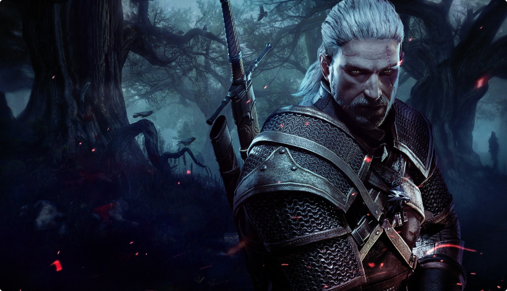

The Witcher 3: Wild Hunt, 2015 yılında Polonyalı stüdyo CD Projekt Red tarafından geliştirilen ve
yayınlanan bir aksiyon RPG'sidir. Oyun, Andrzej Sapkowski'nin büyücü Geralt of Rivia hakkındaki bir
dizi romanına dayanıyor. Oyunda oyuncular, açık bir dünyada seyahat ederken, görevleri tamamlarken,
becerilerini geliştirirken ve canavarlarla savaşırken Geralt'ı kontrol ediyor.
Oyunun kahramanı - Witcher Rivialı Geralt - büyücüler, sihirbazlar ve savaşan krallıklar dünyasındaki
birçok gücün hedefi olan evlatlık kızı Siri'yi arıyor. Oyun sırasında, oyuncuya oyunun sonucunu ve
sonunu etkileyen farklı hikayeler seçme fırsatı verilir.
Oyun, açık dünyası, kaliteli hikayesi, karakterleri ve grafiklerinin yanı sıra zorluğu ve derinliği
ile büyük beğeni topladı. The Witcher 3: Wild Hunt, The Game Awards 2015'ten Yılın Oyunu ödülü de
dahil olmak üzere oyun endüstrisinde birçok ödül almıştır. Slot siteleri size bu oyunu tanımak ve
hakkında daha fazla bilgi edinmek için harika bir fırsat sunuyor.
Komplo
Hikaye ve yan olanlar arasındaki sınır genellikle görünmez! Geralt'ın başka bir dünyadan gelen
yaratıklar tarafından takip edilen evlatlık kızını bulması gerekiyor.
Ciri'yi bulmak ve ardından Av'a karşı savaşmak oyunun ana hedefidir. Kulağa basit geliyor ama şeytan
ayrıntılarda gizli. Önemli olan, kitaplara ve önceki bölümlere (esas olarak birincisine) çok sayıda
atıfta bulunmasına rağmen olay örgüsünün bağımsız olmasıdır.

Oynanış
The Witcher üçüncü şahıs aksiyon RPG'sidir, tam tersi değil! Kontrol altında, oyuncuya zaten yerleşik
bir karaktere ve hayata bakış açısına sahip hazır bir karakter verilir. Bununla birlikte, büyülü bir
nedenden ötürü, tüm seçimler ve hatta bazen taban tabana zıt olanlar bile Geralt'a karşılık geliyor gibi
görünüyor! Oyunda olup bitenlerin mantığını bozan tek bir seçilmiş kararı hatırlamıyorum! Ve bu, oyunda
birçok seçenek olmasına ve gerçekten sonuçları olmasına rağmen.
Witcher 3 çok oyuncu dostudur. Oyunun zorluk derecesini (ve daha doğrusu savaşların zorluk derecesini)
istediğiniz zaman değiştirebilirsiniz. Geliştirme puanlarını istediğiniz yere pompalamadıysanız,
pompalamayı istediğiniz zaman "sıfırlayabilirsiniz" ve birikmiş becerilerinizi istediğiniz yere
pompalayabilirsiniz (önce tüccardan "Arınma İksiri" satın alırsanız). Oyun sizi haritada ipuçları ve
işaretler olmadan bırakmayacak, asla kaybolmayacaksınız! Ana oyun birkaç bileşene ayrılabilir: keşif,
savaş, hikayenin gelişimi için çeşitli yollardan birini seçme.
Keşif- geliştiricilerin en harika başarılarından biri olan açık dünya ile ayrılmaz bir
şekilde bağlantılıdır! Ortamı oluşturmak için yenilikçi fikirler yok ama detaylarda büyük bir titizlik
ve çeşitli ölçeklerde el yapımı görevler var.
Dövüş - Bir canavar katilinin çok yönlü yetenekleri olmadan, bu acımasız dünyada kimse
fazla ileri gidemez çünkü çevrenin güzelliği kolayca ölümcül bir tehlikeye dönüşebilir.
Seçim - Herhangi bir görevde, Geralt'a nasıl ilerleyeceğine dair bir seçenek sunulur.
Önemli olan, seçimin sonuçları gerçektir! Diyalogdaki bir satır veya tüm yan hikayenin kaybı kadar basit
olabilir!